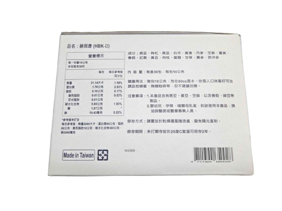

產品系列
成分與劑量，一頁看完
赫保康-II（HBK）升級版：16 種植物原料濃縮萃取，全素營養補給。

營養標示
| 項目 | 每份含量 | 每日參考值百分比 |
|---|---|---|
| 熱量 | 31.14 大卡 | 1.56% |
| 蛋白質 | 1.76 公克 | 2.93% |
| 脂肪 | 0.10 公克 | 0.17% |
| 飽和脂肪 | 0.01 公克 | 0.03% |
| 反式脂肪 | 0.01 公克 | * |
| 碳水化合物 | 5.80 公克 | 1.93% |
| 糖 | 1.87 公克 | * |
| 鈉 | 10.43 毫克 | 0.52% |

主要成分
綠豆、枸杞、黑豆、白朮、黃耆、丹參、芝麻、薑黃、香菇、紅棗、黃豆、肉桂、當歸、甘草、黨參、西洋參
| 項目 | 內容 |
|---|---|
| 內容量 | 每盒 30 包，每包 10 公克 |
| 建議用法 | 每包 10 公克，泡在 60cc 溫水。依個人口味可加蜂蜜、無糖咖啡等，但不建議加糖。 |
| 保存方式 | 請置放於乾燥通風陰涼處，避免陽光直射。 |
| 保存期限 | 未開封存放於 25°C 室溫可保存 2 年。 |
食用及保存注意事項
- 本產品為食品，非藥品，不可取代醫療或均衡飲食。
- 本產品含有黑豆、黃豆、芝麻，以及香菇、綠豆等製品。
- 嬰幼兒、孕婦、哺餵母乳者，如欲使用本產品，請洽詢醫師或醫療專業人員。
- 請依建議量食用，勿超量。
- 完整成分、營養標示、有效日期與保存方式以包裝標示為準。
想訂購或了解哪裡買？
留下你的需求，我們會盡快回覆。
免費詢問